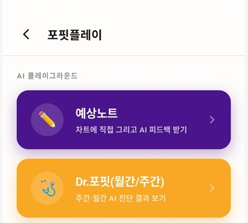
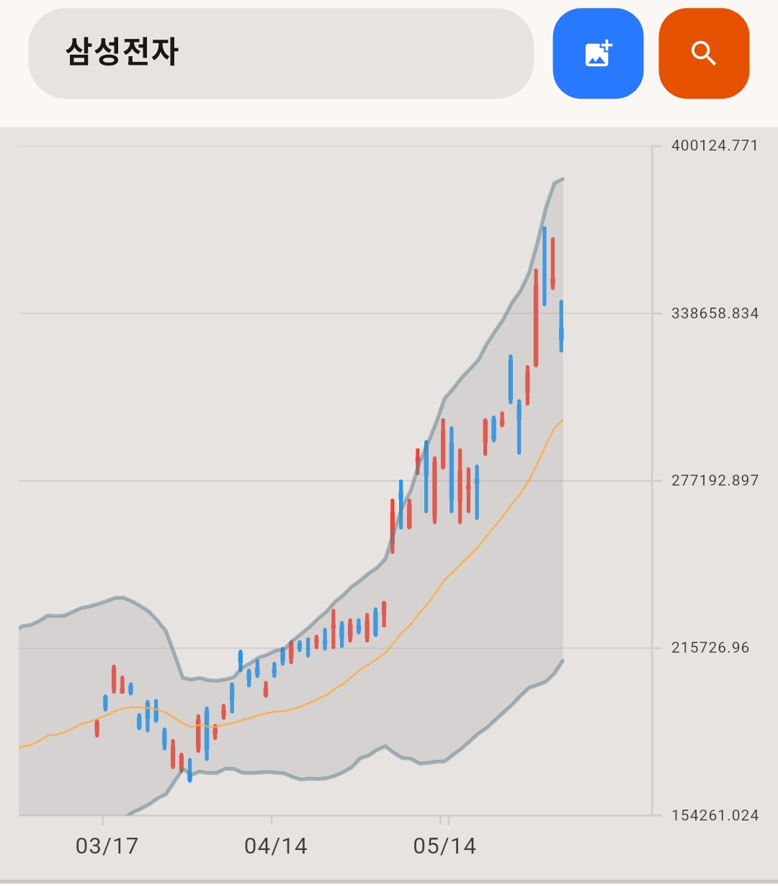
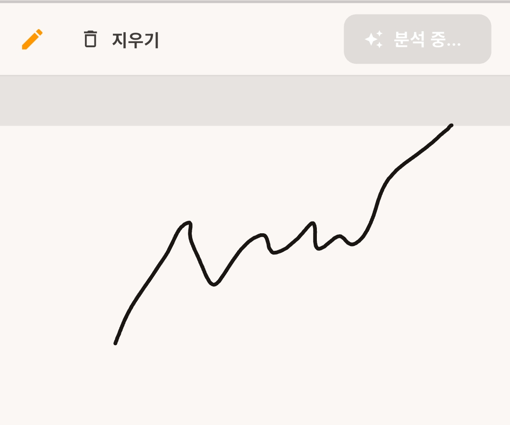
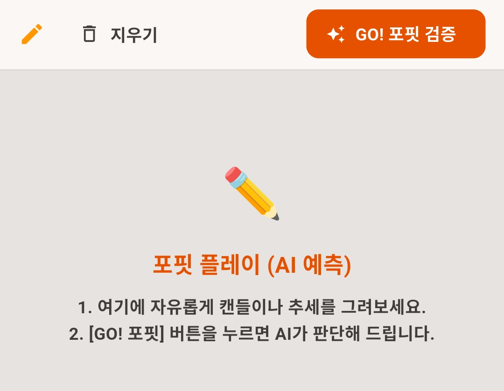
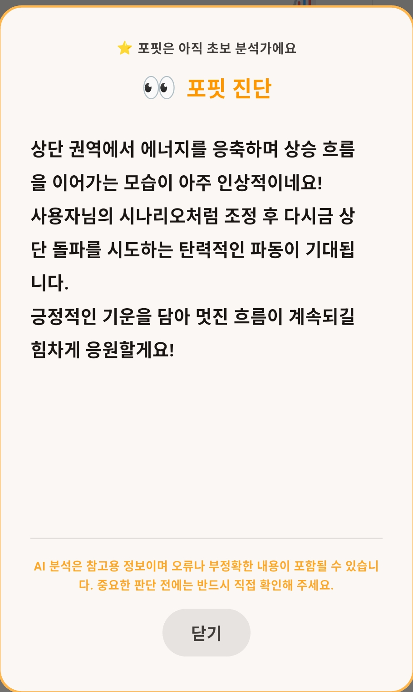
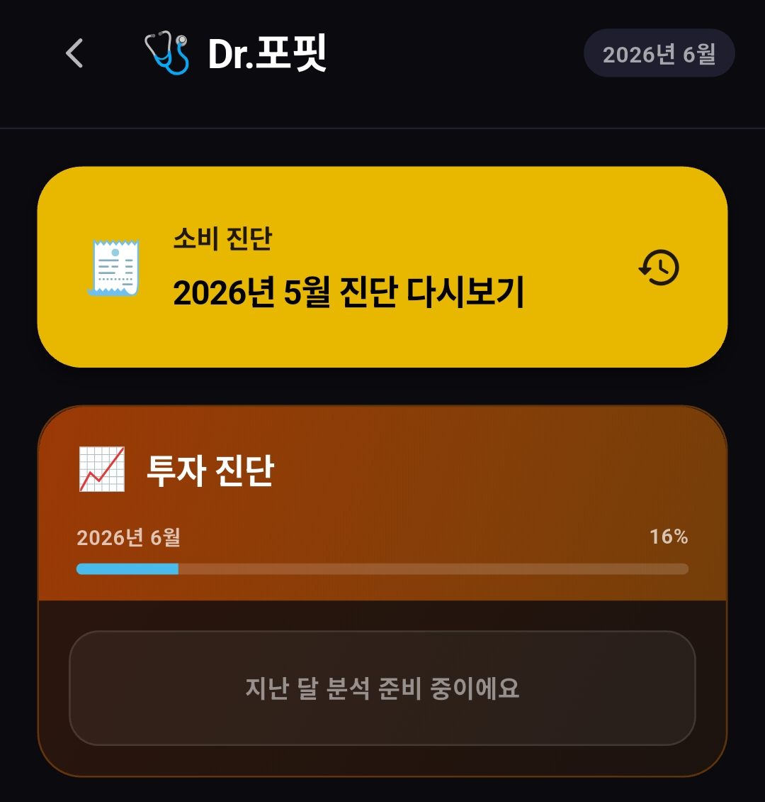
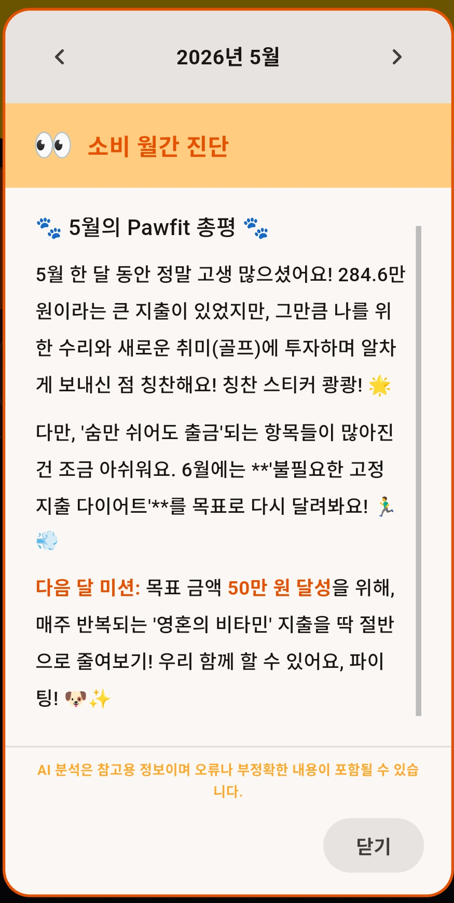

← 포핏 전체 가이드

포핏플레이에는 지금 두 가지 놀이가 있어요
1
예상노트 — 그리면 포핏이 봐줘요
내가 생각하는 앞으로의 방향을 차트 밑에 직접 그리면, AI가 그 시나리오를 보고 한마디 해주는 기능이에요.
- 차트 띄우기 — 위 검색창에 종목명을 입력하면 차트가 나와요. 옆의 파란 버튼으로 차트 스크린샷 이미지를 불러올 수도 있어요.
- 그리기 — 아래 칸에 예상하는 추세선이나 캔들을 자유롭게 그려요.
- GO! 포핏 검증 — 버튼을 누르면 포핏이 내 시나리오를 판단해 줍니다.



밑 칸에 쓱쓱 그리고 → GO! 포핏 검증

내가 그린 시나리오에 대한 포핏의 한마디
참고용이에요. AI 분석에는 오류나 부정확한 내용이 있을 수 있어요. 투자 판단은 꼭 직접 확인하고 하세요.
2
Dr.포핏 — 월간 AI 진단
한 달 치 기록이 쌓이면 받는 월간 정밀 진단이에요. 가계부·매매일지 대시보드의 게이지가 그 진행률이에요.

이번 달 게이지가 차오르는 중 — 다 차면 진단 가능
소비 진단(가계부)과 투자 진단(매매일지)이 따로 있고, 월간 게이지가 다 차면 한 달에 한 번 진단을 받을 수 있어요. 지난달 진단은 언제든 다시 볼 수 있습니다.

한 달 총평 + 다음 달 미션까지 챙겨줘요